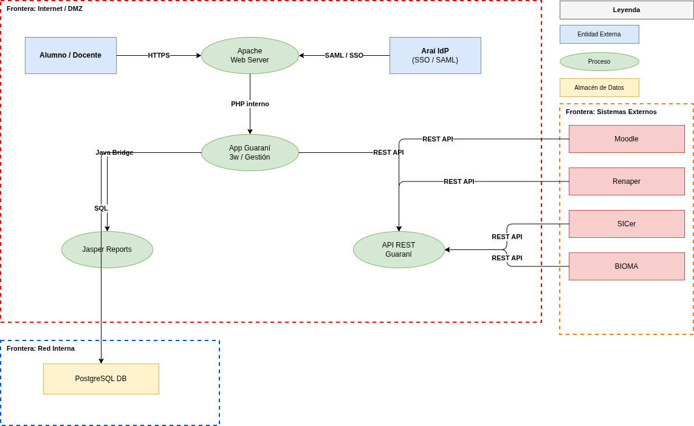
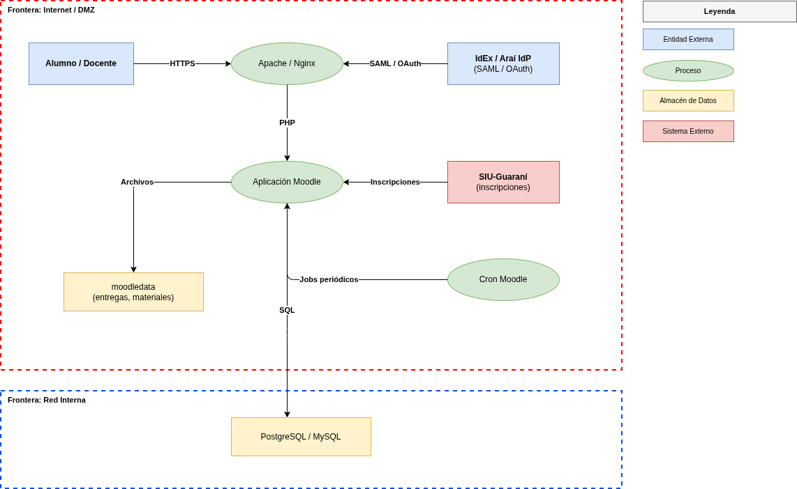

| Nombre y Apellido | Padrón | |
|---|---|---|
| Sebastián Kraglievich | 109038 | skraglievich@fi.uba.ar |
| Lorenzo Minervino | 107863 | lminervino@fi.uba.ar |
| Martín Reimundo | 106716 | mreimundo@fi.uba.ar |
| Mateo Riat Sapulia | 106031 | mriat@fi.uba.ar |
| Fernando Yu | 109007 | fyu@fi.uba.ar |
| Tomás Corzo | 110130 | tcorzo@fi.uba.ar |
| Lisandro Román | 107274 | lroman@fi.uba.ar |
| Actor | Sistema | Descripción |
|---|---|---|
| Alumno | Ambos | Accede a Guaraní para inscripciones y al Campus para materiales, entregas y exámenes |
| Docente | Ambos | Carga notas en Guaraní; sube materiales y califica en Campus |
| Bedel | Guaraní | Administra inscripciones, cursadas y trámites académicos |
| Administrador técnico | Ambos | Accede a servidores, bases de datos y configuraciones |
| Admin de Campus | Campus | Crea cursos, gestiona usuarios y configura plugins de Moodle |
| Araí IdP / IdEx | Ambos | Sistema de autenticación SSO institucional (SAML/OpenID Connect) |
| SIU-Guaraní | Campus | Proveedor externo de inscripciones para Moodle |
| Jasper Reports | Guaraní | Servicio interno de generación de reportes y certificados |
| Sistemas externos | Guaraní | Renaper (identidad), SICer (títulos), BIOMA (biblioteca), Moodle |
| Cron de Moodle | Campus | Proceso interno que ejecuta tareas periódicas sobre BD y archivos |
| Dato | Sistema | C | I | D | Justificación |
|---|---|---|---|---|---|
| Credenciales y tokens SAML/sesión | Ambos | Alta | Alta | Alta | Su exposición compromete la autenticación; su alteración permite suplantación; su indisponibilidad bloquea el acceso de todos los actores |
| Notas y actas académicas | Guaraní | Alta | Alta | Media | Datos privados del alumno; modificación con consecuencias legales; indisponibilidad transitoria tolerable |
| Calificaciones en Campus | Campus | Alta | Alta | Media | Privacidad del alumno; su alteración afecta la evaluación; la plataforma puede operar temporalmente sin ellas |
| Entregas y exámenes | Campus | Alta | Alta | Baja | Propiedad intelectual; su filtración compromete la evaluación; indisponibilidad fuera del período de entrega no es crítica |
| Datos personales (DNI, domicilio, mail) | Ambos | Alta | Media | Baja | Regulados por Ley 25.326; su exposición viola la privacidad; modificaciones puntuales son detectables |
| Historial académico completo | Guaraní | Alta | Alta | Baja | Trayecto formativo del alumno; la alteración tiene consecuencias legales; la consulta no es permanente |
| Credenciales de base de datos | Ambos | Alta | Alta | Alta | Su exposición da acceso total al sistema; su corrupción destruye datos; su indisponibilidad detiene toda la aplicación |
| Materiales docentes | Campus | Media | Media | Media | Propiedad intelectual; alteraciones desinforman a alumnos; su indisponibilidad afecta la cursada activa |
| Registros de actividad (logs) | Ambos | Media | Alta | Media | Su alteración destruye la trazabilidad de auditoría; su pérdida impide investigar incidentes |


| Frontera | Descripción |
|---|---|
| Internet → Servidor Web | Zona más expuesta; tráfico de usuarios sin autenticar |
| App → Base de Datos | Red interna; solo la app debería tener acceso directo |
| Sistema → IdP (Araí / IdEx) | Delegación de autenticación a sistema externo de confianza |
| Guaraní → Moodle | Integración entre sistemas institucionales para inscripciones |
| Guaraní → Sistemas externos | Renaper, SICer, BIOMA — integraciones con terceros |
| Elemento | S — Spoofing | T — Tampering | R — Repudiation | I — Info Disclosure | D — DoS | E — Elev. Privilege |
|---|---|---|---|---|---|---|
| Alumno / Docente | Robo de sesión o credenciales para suplantar al usuario | — | Alumno niega haber realizado una inscripción o acción en el sistema | — | — | — |
| Flujo HTTPS | Certificado SSL falso (MitM): atacante se hace pasar por el servidor ante el usuario | MitM modifica datos en tránsito si TLS no está bien configurado | — | Interceptación de credenciales o datos sin cifrado end-to-end | Saturación de requests en inscripciones | — |
| App Guaraní (PHP) | Token SAML falsificado permite ingresar como otro usuario | Inyección SQL para modificar notas directamente | Operaciones críticas sin registro de auditoría | IDOR: alumno ve notas de otro por falla en la autorización | Colapso de la app por alta demanda simultánea | Alumno accede a funciones de bedel manipulando parámetros de la URL |
| API REST Guaraní | — | Requests maliciosos modifican datos de otros usuarios | — | Endpoints sin autenticación exponen datos sensibles | — | Cambio de ID en URL accede a recursos ajenos (IDOR) |
| PostgreSQL | — | Modificación directa de la BD o eliminación masiva de registros (DROP / DELETE sin restricciones) | — | Dump completo expone notas y datos de toda la comunidad | Queries costosas saturan la base de datos | — |
| Araí IdP | Assertion SAML falsificada si no se valida la firma | Token manipulado en tránsito | — | — | Caída del IdP bloquea toda autenticación en Guaraní | — |
| Elemento | S — Spoofing | T — Tampering | R — Repudiation | I — Info Disclosure | D — DoS | E — Elev. Privilege |
|---|---|---|---|---|---|---|
| Alumno / Docente | Robo de credenciales para acceder como el alumno | — | Alumno niega entrega; docente niega modificar nota | — | — | — |
| Flujo HTTPS | Certificado SSL falso (MitM): atacante se hace pasar por el servidor ante el usuario | Modificación de datos en tránsito si TLS mal configurado | — | Interceptación de entregas o exámenes | Saturación en fechas de parciales y entregas | — |
| App Moodle (PHP) | Robo de sesión vía cookie robada | Plugin malicioso instalado por el administrador modifica calificaciones | Acciones de docentes sin registro de auditoría | Alumno accede a materiales de cursos sin estar inscripto | Plataforma cae en fechas de parciales | Alumno obtiene rol de docente por mala configuración de roles |
| moodledata (archivos) | — | Modificación de archivos de entrega si el servidor no está protegido | — | Acceso directo si la carpeta está dentro del webroot | Disco lleno por entregas masivas sin límite de tamaño | — |
| PostgreSQL / MySQL | — | Modificación directa de calificaciones o eliminación masiva de registros | — | Dump expone datos de todos los usuarios | Queries pesadas en alta concurrencia | — |
| SIU-Guaraní (externo) | Inscripción falsificada para acceder a un curso | Manipulación de datos en el flujo Guaraní → Moodle | — | Integración expone datos académicos sin cifrar | — | — |
| IdEx / IdP (externo) | Assertion SAML falsificada para entrar como otro usuario | — | — | — | Caída del IdP bloquea autenticación en todo el Campus | — |
Vulnerabilidad: La app PHP construye queries SQL concatenando el input del usuario sin prepared statements ni ORM.
Activo comprometido: PostgreSQL completa — notas, legajos, datos personales, credenciales.
Impacto: Modificación arbitraria de notas, robo masivo de datos, eliminación de registros. Impacto potencialmente irreversible.
Vulnerabilidad: Ambos sistemas operan sin escalabilidad horizontal, rate limiting ni CDN. En Guaraní ocurre en inscripciones; en Moodle, en parciales.
Activo comprometido: Disponibilidad completa de ambas plataformas en momentos de mayor necesidad.
Impacto: Miles de alumnos imposibilitados de inscribirse o rendir. Ocurre en la práctica todos los cuatrimestres.
Vulnerabilidad: Moodle mal configurado en permisos permite que un alumno acceda a recursos de cursos en los que no está inscripto.
Activo comprometido: Materiales docentes, exámenes, entregas de otros alumnos.
Impacto: Filtración de exámenes antes de la evaluación, copia de trabajos, compromiso de la integridad académica.
Vulnerabilidad: En Guaraní, la app verifica autenticación pero no autorización por recurso (IDOR). En Moodle, la complejidad de roles facilita asignaciones incorrectas.
Activo comprometido: Datos ajenos, funciones administrativas, calificaciones.
Impacto: Un alumno accede a datos de otro o a funciones de bedel/docente; en Moodle puede modificar sus propias calificaciones.
| Criterio | Punt. | Justificación |
|---|---|---|
| D — Damage | 9 | Permite modificar, robar o destruir toda la BD académica |
| R — Reproducibility | 7 | Con herramientas automatizadas (SQLMap) es fácilmente repetible |
| E — Exploitability | 8 | Difícil de mitigar si está extendido en el código PHP |
| A — Affected Users | 10 | Afecta a todos los alumnos, docentes y administradores |
| D — Discoverability | 6 | Requiere análisis pero es una vulnerabilidad bien conocida |
| Criterio | Punt. | Justificación |
|---|---|---|
| D — Damage | 6 | Filtración de exámenes compromete la integridad académica |
| R — Reproducibility | 6 | Repetible en cualquier curso mal configurado |
| E — Exploitability | 6 | Requiere conocer Moodle pero sin conocimientos avanzados |
| A — Affected Users | 4 | Afecta a alumnos y docentes de los cursos involucrados |
| D — Discoverability | 7 | Un alumno curioso explorando URLs puede encontrarlo |
| Amenaza | Contramedida | Tipo |
|---|---|---|
| Inyección SQL | Prepared statements u ORM en toda la capa PHP; nunca concatenar input del usuario en queries | Código |
| DoS en inscripciones | Rate limiting por IP/usuario, cola de requests, escalabilidad horizontal con balanceador de carga | Arquitectura |
| IDOR / Elev. Privilege | Verificar en cada endpoint que el recurso pertenece al usuario autenticado; RBAC centralizado | Código |
| Token SAML falsificado | Validar firma, emisor y expiración de toda assertion SAML; rotación de sesiones; HTTPS obligatorio | Configuración |
| Acceso directo a BD | Red interna segmentada; solo la app puede conectarse a PostgreSQL; usuario de BD con mínimos privilegios | Arquitectura |
| Repudio / sin logs | Log de operaciones sensibles con timestamp, usuario e IP; logs en sistema separado de solo escritura | Código |
| Caída de Araí IdP | Circuit breaker que detecta la indisponibilidad del IdP y activa un fallback de autenticación local | Arquitectura |
| Amenaza | Contramedida | Tipo |
|---|---|---|
| Acceso sin inscripción | Configuración correcta de permisos por curso; auditoría periódica de roles; tests de acceso automatizados | Configuración |
| DoS en parciales | Balanceo de carga, caché de contenido estático, límite de sesiones concurrentes, CDN | Arquitectura |
| Elev. Privilege por roles | Revisión periódica de roles; principio de mínimo privilegio; alertas ante cambios de rol inesperados | Configuración |
| Acceso a moodledata | Mover moodledata fuera del webroot; configurar Apache/Nginx para denegar acceso directo al directorio | Configuración |
| Robo de sesión | HTTPS obligatorio; cookies con flags Secure y HttpOnly; timeout de sesión activo | Configuración |
| Plugin malicioso | Proceso formal de revisión y aprobación antes de instalar cualquier plugin; lista blanca de plugins permitidos | Proceso |
| Integración Guaraní | TLS mutuo entre Moodle y Guaraní; validar y sanitizar todos los datos recibidos | Código |
| Repudio / sin logs | Logging completo de Moodle para acciones sensibles; proteger logs contra modificación | Configuración |